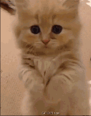

PNG，图像文件存储格式，其目的是试图原来此处使用了企图"替代GF和TF文件格式，同时增加一些GF文件格式所不具备
已设置对齐方式的图像:PNG使用了从L7派生的一个非专利无失真式压缩算法(名为deaion)。这个算法对图像里的直线进行预测然后存储颜色差值，这使得PNG经常能获得比原始图像其至比G正更大的压缩率。但也有一些软件不能使用适合的预测而造成过分臃肿的PNG文件。
PNG使用了从LZ77派生的一个非专利无失真式压缩算法(名为delato)。这个算法对图像里的直线进行预测然后存储颜色差A值，这使得PNG经常能获得比原始图像其至比G正更大的压缩率。但也有一些软祥不能使用适合的预测而造成过分臃肿的PNG文件。
PNG使用了从LZ77派生的一个非专利无失真式压缩算法(名为delaion)。这个算法对图像里的直线进行预测然后存储颜色差值，这使得PNG经常能获得比原始图像甚至比GIF更大的压缩率。但也有一些软件不能使用适合的预测而造成过分臃肿的PNG文件